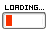

List of Text Cliques
On this page you can find a list of text cliques and pixel cliques that you can join if you have a website! As far as I can tell, this is already the most comprehensive list of web cliques on the Internet - and you can help expand it! Got questions? Check out the FAQ.
If you know a clique that isn't on the list yet, please submit it here! You can submit any clique, it doesn't have to be your own! Your submission should appear in the list once you refresh this page after submitting.
If there is information of a clique already in the list that needs to be changed (e.g. URL of clique changed, clique is now closed, ...) please use this form. I go through these manually so please only do this when necessary.
The table below is automatically generated based on people's unmoderated responses to the submission form. This means there might be incorrect information or spam. I will try my best to keep it clean, but be aware that I am not the author of all the information below and therefore might not agree with it. I will spam-proof and/or moderate responses in the future if it becomes necessary.
(If this goes well I will make a webring list! Stay tuned!)
There are a total of ? cliques listed! · Click on column headings to sort them. · Use Ctrl+F to search through this page.
| Clique ▾ | Description & Example | Category | Member List |
|---|---|---|---|
|  | |||
FAQ
What is a (text) clique and how can I join one?
A clique is like a little club you can join that connects websites of common interests, values, etc. There's not really a point to them other than that and expressing your interests on your website. Cliques are very casual compared to webrings, and it's easy to join them:
You join a clique by simply copying the text/code, adding any missing information, and adding it to your website. The page of a clique will usually tell you exactly what to do. If the clique has a members list (and not all do) you should also fill out the form so that you can be added to the list.
What is the difference between a clique and a fanlisting?
There is no clear difference. Fanlistings, traditionally, have images in specific sizes (e.g. 50x50, 100x50) that you add to your website instead of text. Fanlistings also always have a member list, meanwhile only some cliques have member lists. Some cliques use fanlisting functionality for their members list and offer both text links (like a clique) and images (like a fanlisting).
This list does not include fanlistings that do not offer a text code like cliques do.
What is a pixel clique?
A pixel clique is a clique you join my creating a pixel sprite (often based on an existing template) of something, e.g. an egg. You then add your sprite and other peoples' sprites to your website.
How can I make my own clique?
Just make one! Since a members list is not required, you can literally just make a clique up, share it with others, and boom - you're done! If you want to have a members list you can use Google Forms or something similar to collect responses. Some cliques also use fanlisting functionality.
Can you add this/my clique?
I could, but I'd prefer it if you can added it yourself by filling out this form!
How did you make this?
With Google Forms, Google Sheets and the Google Sheets API. I have a tutorial here.
Other Clique Lists
Here are other people's lists of cliques, which I've used in the creation of my own. Huge kudos to them!
I spend hours of my free time coding tools like these that I publish for free. If you'd like to say thanks, please share this with others and/or buy me a coffee!

If you have questions about this page feel free to contact me via my guestbook or my neocities profile. I promise I don't bite!